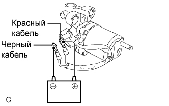

ГИДРАВЛИЧЕСКИЙ УСИЛИТЕЛЬ ТОРМОЗНОЙ СИСТЕМЫ (для моделей с правосторонним рулевым управлением) > ПРОВЕРКА |
| 1. ПРОВЕРЬТЕ НАСОС УСИЛИТЕЛЯ ТОРМОЗНОЙ СИСТЕМЫ В СБОРЕ |
|  |
Подайте напряжение аккумуляторной батареи на провода насоса усилителя тормозной системы и проверьте работу электродвигателя насоса.
| Условия измерений | Заданные условия |
| Положительный (+) вывод аккумуляторной батареи → контакт красного провода | Электродвигатель насоса работает |
| Отрицательный (-) вывод аккумуляторной батареи → контакт черного кабеля |